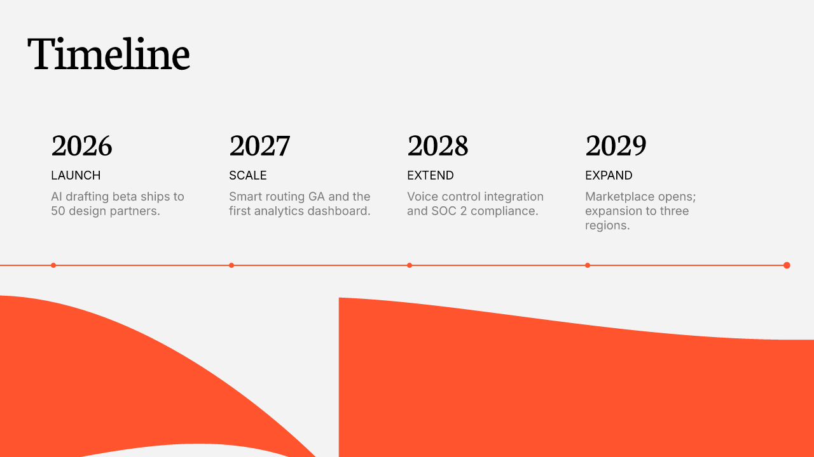
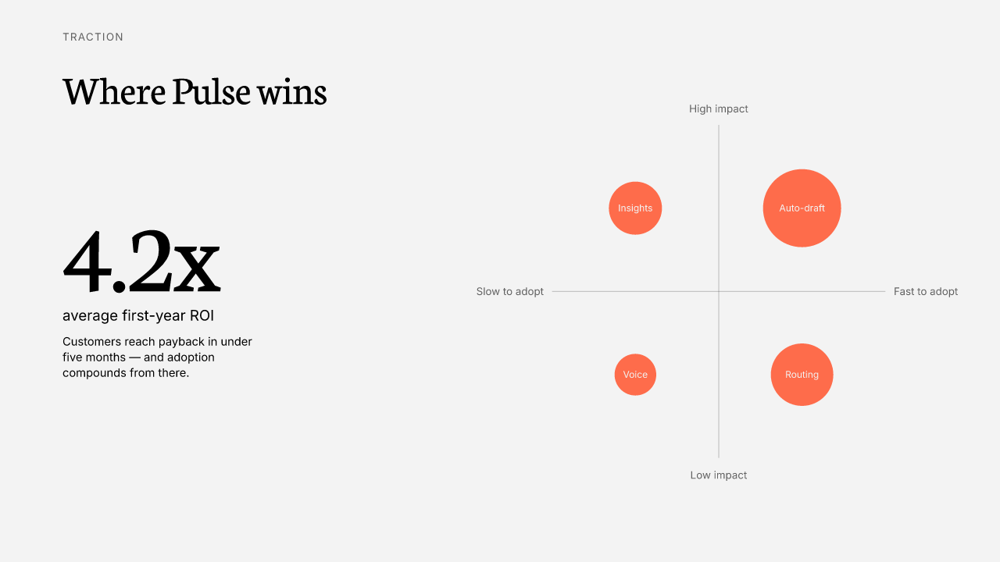
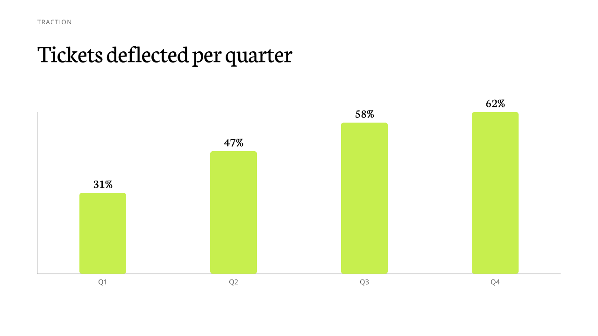
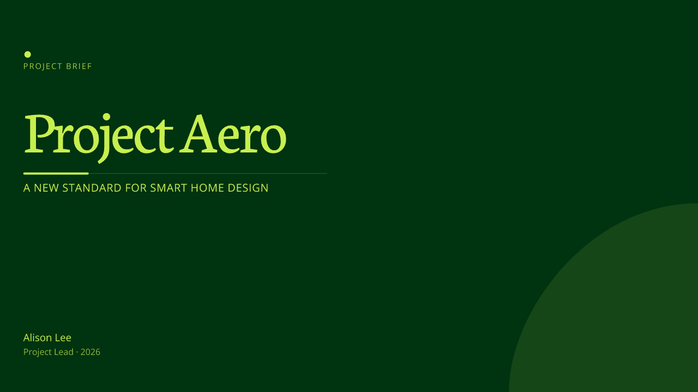
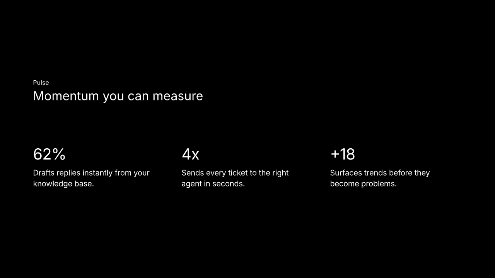
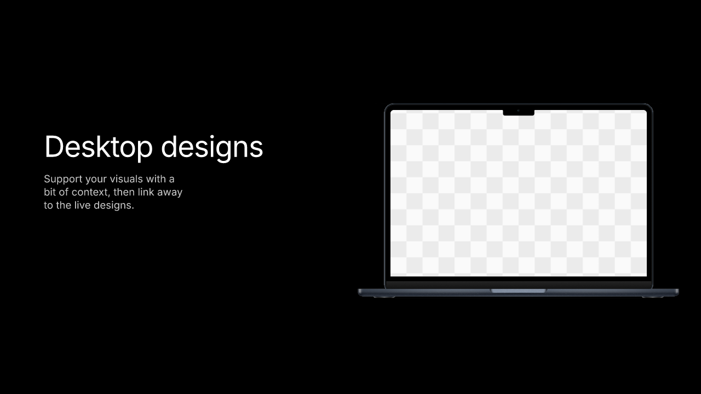
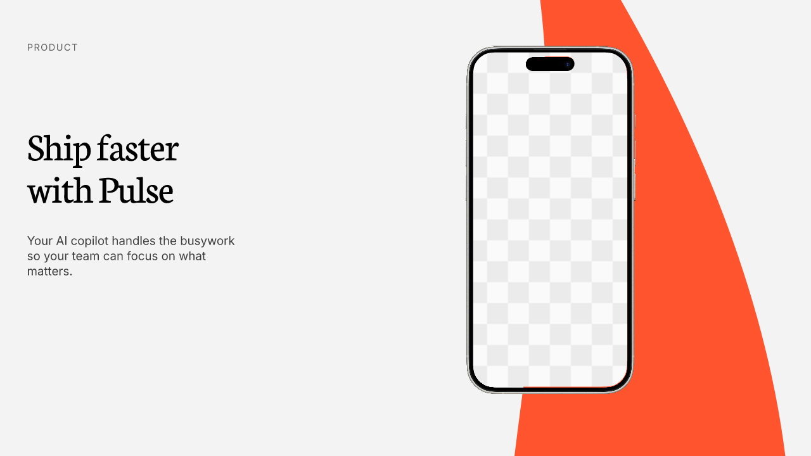
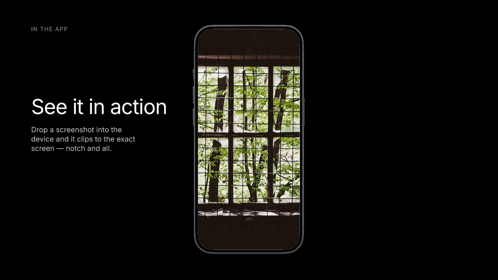

An agentic generative system
for design-grammar slide synthesis
본 프로젝트는 프레젠테이션 템플릿을 고정된 편집 틀이 아니라 학습 가능한 디자인 사례로 간주하고, 그로부터 추출한 디자인 문법을 기반으로 새로운 슬라이드 레이아웃을 합성하는 시스템을 제안한다. 입력 슬라이드는 객체 단위로 분석되며, 시스템은 간격, 정렬, 시각적 계층, 역할별 컴포넌트 구조, 객체 간 관계를 명시적 규칙으로 변환한다. 이후 사용자 프롬프트에 따라 슬라이드의 의도와 콘텐츠 구조를 해석하고, 추출된 문법을 제약 조건으로 사용해 원본에 없던 새로운 배치를 생성한다. 특히 본 시스템은 LLM의 역할을 의미 해석과 계획 수립으로 제한하고, 좌표 계산·텍스트 측정·충돌 회피·여백 보정 등 픽셀 정밀도가 필요한 작업은 결정론적 코드에 위임한다. 이는 LLM 기반 생성에서 빈번히 발생하는 레이아웃 겹침, 캔버스 이탈, 결과 비일관성 문제를 줄이기 위한 핵심 설계다. 결과적으로 본 프로젝트는 단순한 템플릿 치환을 넘어, 디자인 규칙의 추출·추상화·재조합을 통해 일관성과 신규성을 동시에 갖춘 프레젠테이션을 생성하는 파이프라인을 구현했다.
How it works · 파이프라인
사용자 프롬프트(와 선택한 이미지)는 STAMP 단계에서만 들어간다. BAKE에서 미리 만들어 둔 GrammarSpec만 읽어서 합성하고, 평가를 통과 못 하면 다시 만든다. 원본 SVG는 합성할 때 한 번도 다시 읽지 않는다.
AI engineering · 역할을 어디서 가를 것인가
역할을 가른 기준은 분명하다. LLM은 '무엇이 무엇인지', '무엇이 보기 좋은지'는 잘 맞히지만 좌표 같은 숫자는 자주 틀린다. 그래서 의미 판단은 모델이, 픽셀은 코드가 맡는다. 좌표까지 모델에 맡긴 구성에서는 겹침과 화면 이탈, 재현 불가가 그대로 드러났다.
- 슬롯 분류 — 번호 오버레이를 비전으로 읽어 role·mediaKind 판정
- 아키타입 선택 — 프롬프트를 슬라이드 목적으로 분해
- 콘텐츠 작성 — 레이아웃이 요구하는 정확한 블록만 생성
- 품질 비평 — 렌더된 픽셀을 다시 비전으로 평가
- 좌표 생성 — 그리드 스냅·간격 리듬·계층에서 산출
- 텍스트 측정 — opentype.js 정확 메트릭, measure=render parity
- 충돌 회피 — push-down·safe area·비겹침 보장
- 대비 보정 — 가독성 자동 교정, 디자인 floor 강제
Agentic patterns · 에이전틱 패턴
Structured tool-use as a contract
AI 호출은 자유 텍스트를 파싱하지 않는다. tool 스키마로 타입이 강제된 객체(ContentPlan·PlacementPlan·CritiquePatch)만 받는다. 그런데도 모델이 가끔 배열을 빼먹거나 형태가 어긋나길래, 경계에서 한 번 더 방어하도록 막아뒀다.
Vision-in-the-loop
슬롯에 번호를 그려서 비전으로 분류하고, 합성한 결과도 다시 비전으로 본다. 텍스트 설명이 아니라 실제로 렌더된 픽셀을 보기 때문에 "말로는 멀쩡한데 눈으로 보면 깨진" 경우를 잡는다.
Evaluator–optimizer loop
만들고 → 7개 지표로 채점하고 → 기준에 못 미치면 스스로 고친다. 만드는 쪽과 평가하는 쪽을 분리해 뒀다.score < 7 → revise novelty < 6 → reject & re-synthesize N ≤ 2 (bounded)
Bake-once, stamp-many
흡수·문법 추출·비전 분류처럼 비싼 작업은 테마당 한 번만 돌려 GrammarSpec에 캐시한다. 생성할 때는 원본 SVG를 다시 읽지 않고 캐시만 조합해서, 싸고 빠르고 결과가 항상 같다.
Structure-first context
에이전트가 더 잘 고르게 하려고 이미 뽑아둔 구조를 그대로 보여준다. 역할 의미(kpi는 헤드라인 지표)나 아키타입이 가진 미디어(이 골격엔 제품 목업이 있음) 같은 것들. 의미 설명을 따로 비전으로 굽는 대신 결정론 구조를 먼저 쓰니 돈도 안 들고 환각도 없다.
Core logic · 핵심 로직
GrammarSpec
팔레트·타입스케일·정렬 그리드·간격 리듬·계층·blocks·측정 cardSpec을 하나로 구조화한 명시적 디자인 문법.
Archetype skeletons
아키타입별 예시 슬라이드의 region을 캔버스 분수로 정규화·median 집계한 패턴. 특정 프레임 복사가 아님.
Grammar-only synthesis
골격을 GrammarSpec만으로 인스턴스화. 좌표는 그리드·리듬·계층에서 생성, 카드 내부는 측정값 재사용.
Quality evaluator
7지표(문법 일관성·신규성·위계·간격·적합도·유사도 페널티·종합) 채점 + 게이트.any < 7 → revise layout novelty < 6 → reject
Decoration = theme habit
장식 양을 테마의 측정 coverage에서 결정(강제 아님). 빈 코너·여유 반경·팔레트색으로 배치 근거를 기록.
Design floor
테마 무관 기본 규약: 안전 여백(≥5%)·최소 폰트(~18px)·초점 크기(~54px)·비겹침(push-down/safe area).
Results · 합성 결과 (no frame copied · grammar-synthesized)
같은 제품(Pulse, AI 고객지원 코파일럿)으로 세 테마에서 6장을 만들었다. 텍스트 슬라이드부터 데이터 시각화, 디바이스 목업, 타이틀까지 포함된다. 모두 원본 프레임을 복사하지 않고 GrammarSpec에서 좌표를 새로 생성한 것이며, 장식은 테마가 원래 쓰던 정도만 따른다. colorful은 과감하게, black은 거의 쓰지 않고, green은 차분하게 쓰는 것을 확인할 수 있다.






Design systems · 템플릿 → 정립된 시스템
테마마다 슬라이드들을 하나의 재사용 디자인 시스템으로 정리한다. 복사한 슬라이드가 아니라 거기서 뽑아낸 규칙이다. 인스펙터는 팔레트, 타입 스케일, 그리드와 리듬, 계층, blocks, 아키타입 골격, 장식, 목업을 한 페이지에 모아 보여준다.
인스펙터(scripts/design-system.mjs)는 GrammarSpec를 디자이너 문서처럼 그리고, 각 골격을 실제 예시 슬라이드와 나란히 놓는다. 추상 패턴과 실물을 같이 봐야 이해가 된다.
Device mockups · 목업 자산 (place the frame, user fills the screen)
목업(아이폰·맥북)은 틀과 빈 화면을 한 세트로 묶어 재사용 자산으로 떼어낸다. 합성할 땐 프레임을 그대로 찍고, 화면은 둥근 모서리와 노치까지 맞춘 빈 자리로 남긴다. 이미지는 우리가 만들지 않는다. 사용자가 직접 넣는다. 한 슬라이드에 여러 대가 들어갈 땐 그 슬라이드가 원래 쓰던 배열(예: 폰 3대 나란히)을 그대로 가져온다. black·colorful 두 테마에서 목업 11개를 뽑았다.



Hard problems · 풀어낸 난제
Progress · 진행 현황
Built · 구축
Quality floor · 기본 규약
Open · 남은 작업
Quality journey · 품질 개선 이력
Edge hugging → safe padding
colorful 그리드 margin 31px로 텍스트가 가장자리에 붙음 → 안전 여백 = max(grid, 5%) 강제.
Tiny text → font floor
측정 카드 폰트가 12px까지 축소 → 최소 폰트(~18px)·초점(~54px) 규약.
Empty comparison → tier cards
가격 티어가 한 문장으로 뭉침 → 카드 구조 보장(Starter/Growth/Scale).
Clustered band → cohesive center
마지막 zone 뒤 phantom 갭이 그룹을 미정렬 → 실제 잉크 범위로 중앙 정렬.
Forced blob → theme habit
모든 슬라이드 같은 블롭 → 테마 측정 coverage 기반(black은 무장식 유지).
Arbitrary asset → explainable
인덱스 회전 → "가장 빈 코너 + 여유 반경 + 팔레트색" 근거 기록.
id 없는 화면 슬롯 → 디바이스 그룹 검출
colorful 목업 화면은 id 없는 path(<g id="Image"> 안)라 추출 실패(0개) → 화면을 디바이스 그룹(iPhone/MacBook) 조상으로 검출하도록 변경 → 0→5개.
renderer undefined font → grammar fallback
family 없는 역할에서 렌더가 undefined로 크래시 → GrammarSpec가 테마 기본 fontFamily를 노출해 근본 해결.
What's next · 차기 기술 로드맵
지금 결정론 배치는 안정적으로 돌아간다. 다음은 같은 역할 분리를 유지하면서 더 센 도구를 얹는 것이다.
Stencil · 디자인 문법 기반 슬라이드 합성 — 개인 프로젝트